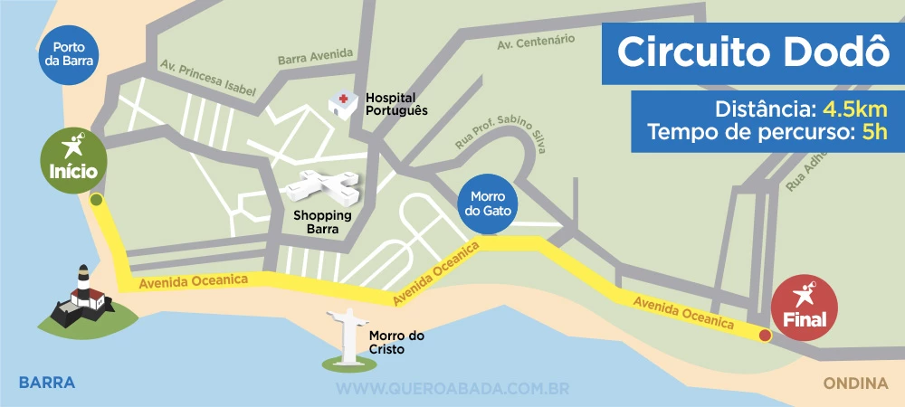
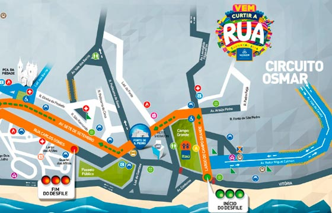
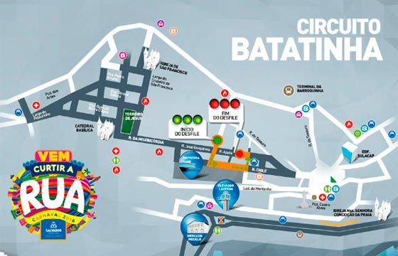

Circuitos
Os três circuitos mais conhecidos são: Dodô, na orla da Barra-Ondina, onde ficam os maiores camarotes da folia; o Osmar, no Campo Grande, que é o circuito mais tradicional da festa; e o Batatinha, no Pelourinho, conhecido por ter mais artistas alternativos. Apesar disso, existem outras possibilidades para curtir a festa.
Dodô (Barra/Ondina): O circuito Dodô sai do Farol da Barra, em direção à praia de Ondina, uma distância de 4,5 km, em um percurso de cerca de 5h. Por lá se encontram os maiores camarotes e a maioria das atrações.

Osmar (Campo Grande): O circuito Osmar ia do Campo Grande ao Campo Grande, descendo pela Avenida Sete de Setembro e subindo a Avenida Carlos Gomes. Em 2009, o Conselho do Carnaval alterou o percurso, que agora termina na praça Castro Alves. São 4 km de distância, que também são feitos em cerca de 5h. É o circuito mais tradicional do carnaval de Salvador.

Batatinha (Pelourinho): O circuito Batatinha acontece nas ruas do Pelourinho, sem um trajeto de início e fim. É o circuito mais "família" do carnaval de Salvador, indicado principalmente para crianças. Por lá rolam concursos e as principais atrações são as marchinhas e fanfarras, que remetem ao carnaval antigo.

Sérgio Bezerra (Barra): O Sérgio Bezerra entrou na programação do carnaval em 2013, como circuito do desfile do Habeas Copos. O percurso sai da Rua Marques de Leão em direção ao Farol da Barra, seguindo pelas ruas Miguel Burnier e Airosa Galvão, passando pela Avenida Oceânica.
Contrafluxo (Praça Castro Alves): O circuito Contrafluxo é realizado nas imediações da Praça Castro Alves, entre o final da Avenida Sete de Setembro e o início da Avenida Carlos Gomes. Assim como o Batatinha, é um circuito sem um trajeto de início e fim.
Mestre Bimba: É realizado no bairro do Nordeste de Amaralina, bem distante dos circuitos centrais da folia. Foi criado em 2012 e conta com dezenas de 40 blocos locais, que desfilam pelas ruas do Nordeste de Amaralina.
Riachão: É o percurso da tradicional Mudança do Garcia, que vai do bairro do Garcia até o Campo Grande. Apesar da Mudança do Garcia ter iniciado lá em 1959, o nome do circuito só foi oficializado em 2015, em homenagem ao artista que é cria do bairro.